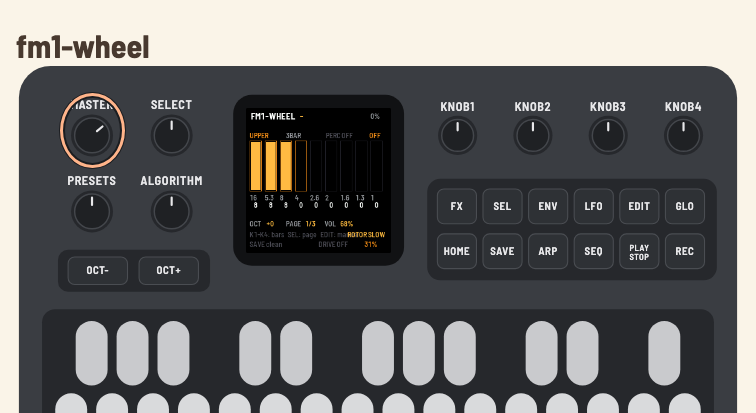

fm1-wheel — manual do hardware
Português · English
Firmware de órgão tonewheel para o M-VAVE FM-1, derivado do setBfree, rodando sobre o fm1-base.
Estado: o firmware compila para o FM-1 e passa nas checagens do build, mas ainda não foi testado no hardware. O host simulator e o emulador web rodam a cadeia completa (tonegen, scanner, preamp, reverb e Leslie). Este manual descreve o comportamento pretendido/implementado; ajustes de performance e de teclado podem mudar depois do primeiro teste no aparelho.
1Instalar
O firmware é instalado por USB-MIDI. É preciso o FM-1 conectado por um cabo USB de dados e nenhum outro aplicativo usando as portas MIDI do aparelho.
make device # gera app/build/fm1-wheel.fwsc
make install # mostra o aparelho e pede confirmação antes de gravarTambém é possível usar o instalador web do projeto (Chrome/Edge) ou o fm1_install.py diretamente. Instalar firmware é por sua conta e risco. Mantenha o firmware oficial e as ferramentas de recuperação (fm1-base/bsp/tools/fm1_rescue.py, FM-1-transporter) à mão.
Se a instalação for interrompida, o FM-1 fica em modo de update e o mesmo comando retoma a gravação. Para voltar ao firmware oficial, use o atualizador da M-VAVE ou o instalador web.
2Ligar e tocar
O FM-1 tem 27 teclas (F3–G5), 7 encoders, 14 botões, um potenciômetro MASTER e a tela de 240×240.
- As teclas tocam o manual superior (upper) por padrão.
OCT-/OCT+transpõem o teclado embutido em até ±2 oitavas. O MIDI externo não é transposto por esses botões.- O potenciômetro MASTER controla o volume de saída.
- Um controlador MIDI externo (USB ou TRS) pode tocar qualquer manual; veja a seção 5.

A tela mostra:
- cabeçalho: nome, nota que está soando e carga de CPU;
- corpo: manual selecionado, registração, percussão, vibrato e as 9 barras de drawbar com os footages 16', 5⅓', 8', 4', 2⅔', 2', 1⅗', 1⅓', 1';
- rodapé: oitava, página, volume, rotor, estado do SAVE, drive e reverb.
3Botões e encoders
Encoders
| Encoder | Função |
|---|---|
SELECT | página de edição: 0 = barras 0–3, 1 = barras 4–7, 2 = barra 8 + percussão |
ALGO | manual sendo editado: UPPER, LOWER, PEDAL |
PRESET | 8 registrações de fábrica; aplica ao manual selecionado |
K1–K4 | editam as quatro barras da página atual |
Na página 2, K1 edita a barra 1' e K2–K4 controlam percussão (on/off), harmônico (2º/3º) e decay (fast/slow).
Botões
| Botão | Função |
|---|---|
FX | drive on/off (preamp/overdrive) |
SEL | próxima página de drawbars |
ENV | percussão on/off |
LFO | ciclo de vibrato/chorus: OFF → V1 → C1 → V2 → C2 → V3 → C3 |
EDIT | próximo manual: UPPER → LOWER → PEDAL |
GLO | modo drawbar keys (seção 4); o LED acende quando ligado |
HOME | volta à registração 0 (3BAR) |
SAVE | grava os ajustes na flash |
ARP | percussão 2º/3º harmônico |
SEQ | ciclo de reverb: OFF → 30% → 60% → 100% |
PLAY | rotor: STOP → SLOW → FAST |
REC | reservado (sem função nesta versão) |
OCT- / OCT+ | transpose do teclado embutido (−2..+2 oitavas) |
MASTER | volume de saída |
Os rótulos impressos no FM-1 são os originais; a tela mostra a função real de cada controle.
Registrações de fábrica
| # | Nome | Barras |
|---|---|---|
| 0 | 3BAR | 888000000 |
| 1 | BLUES | 888800000 |
| 2 | ROCK | 888000008 |
| 3 | TOPS | 800000888 |
| 4 | FLUTE | 008000000 |
| 5 | FULL | 888888888 |
| 6 | BASS | 858000000 |
| 7 | STRNG | 006876540 |
A registração é aplicada ao manual selecionado (ALGO/EDIT).
4Modo drawbar keys (teclado como controle)
O GLO liga/desliga o modo em que as 27 teclas deixam de tocar e passam a editar os drawbars do manual selecionado. É o equivalente ao modo de programação dos órgãos clonewheel antigos.
- Modo ligado: as teclas embutidas não tocam; cada pressão sobe ou desce uma posição de um drawbar. O MIDI externo continua tocando — você pode usar um controlador para tocar e o teclado do FM-1 para editar a registração.
- Modo desligado: as teclas voltam a tocar normalmente.
- O modo não é salvo: no próximo boot ele começa desligado.
- As mudanças de drawbar marcam
SAVE; useSAVEpara gravá-las.
Mapa das teclas
Cada par bemol (tecla preta) / natural (tecla branca) controla um drawbar:
| Par | Drawbar | Ação |
|---|---|---|
| F#3 / G3 | 16' | F# sobe, G desce |
| G#3 / A3 | 5⅓' | G# sobe, A desce |
| A#3 / B3 | 8' | A# sobe, B desce |
| C#4 / D4 | 4' | C# sobe, D desce |
| D#4 / E4 | 2⅔' | D# sobe, E desce |
| F#4 / G4 | 2' | F# sobe, G desce |
| G#4 / A4 | 1⅗' | G# sobe, A desce |
| A#4 / B4 | 1⅓' | A# sobe, B desce |
| C#5 / D5 | 1' | C# sobe, D desce |
- F3, C4, F4 e C5 são ignoradas.
- D#5, E5, F5, F#5 e G5 ficam livres (sem função nesta versão).
- No modo drawbar, as 18 teclas de controle acendem com o mesmo brilho; as ignoradas/livres ficam apagadas. A posição (preta = sobe, branca = desce) indica a direção.
- Cada pressão muda uma posição (0..8). O valor aparece na barra correspondente na tela; ao chegar em 0 ou 8, a tecla não passa do limite.
- O manual editado é o que aparece no topo da tela (
UPPER/LOWER/PEDAL); useEDITou o encoderALGOpara trocar.
Para tocar com o teclado embutido novamente, aperte GLO outra vez. Se uma tecla estiver pressionada na troca, ela é liberada e só volta a soar depois de solta e pressionada de novo.
5MIDI
O FM-1 tem USB-MIDI (in/out) e entrada TRS-MIDI; não há saída DIN.
| Canal | Manual |
|---|---|
| 1 | upper |
| 2 | lower |
| 3 | pedal |
Control Changes
| CC | Função |
|---|---|
| 1 / 11 | swell (volume) |
| 70–78 | drawbars do upper: 16', 5⅓', 8', 4', 2⅔', 2', 1⅗', 1⅓', 1' (0 = máximo, 127 = mínimo) |
| 80 | percussão on/off (≥64 liga) |
| 81 | decay fast/slow (≥64 fast) |
| 82 | percussão 2º/3º (≥64 2º) |
| 64 | rotor slow/fast (≥64 alterna) |
| 65 | drive on/off (≥64 liga) |
| 92 | vibrato: 0..127 → OFF/V1/C1/V2/C2/V3/C3 |
| 93 | caráter do drive |
| 95 | routing do vibrato: 0 off, 32 lower, 64 upper, 96 both |
Program Change 0–7 seleciona uma das oito registrações.
O mapa de drawbars é o do setBfree (invertido: 0 = máximo). Um controlador de drawbars externo funciona sem configuração adicional, inclusive no modo drawbar keys.
6O que é salvo
SAVE grava na flash:
- a oitava;
- o swell;
- os 27 drawbars (upper/lower/pedal);
- percussão (on/off, 2º/3º, fast/slow);
- a registração selecionada;
- vibrato (modo);
- drive e caráter;
- reverb;
- rotor (stop/slow/fast).
Não são salvos: o modo drawbar keys, a página de edição e o manual selecionado (voltam ao padrão no boot).
7Solução de problemas
| Sintoma | O que conferir |
|---|---|
| Sem som | MASTER, cabo de áudio, PLAY/rotor, volume do amplificador; no modo drawbar as teclas não tocam (aperte GLO) |
| Teclas não tocam | modo drawbar ligado (GLO aceso) |
| Nota presa | solte e pressione a tecla; se persistir, desligue e ligue o FM-1 |
| MIDI externo não toca | canal 1/2/3, cabo USB de dados, outro app usando a porta |
| Instalação não encontra o FM-1 | cabo USB de dados, feche DAWs/apps MIDI; confira fm1_install.py --info |
| Instalação interrompida | reconecte e rode make install de novo; o FM-1 fica em modo update |
| Som distorcido | reduza MASTER, drive ou a registração (FULL); o limiter do app atua no pico |
8Desenvolvimento
make build-host # simulador de host
make test-host # testes do app (teclas, drawbars, MIDI, persistência)
make web # emulador no navegador (Emscripten)
make serve-web # http://localhost:8790/
make compare # A/B contra o setBfree
make device # firmware para o FM-1
make install # grava no FM-1 conectadoO emulador web roda o mesmo código C do firmware; use Cmd+Shift+R para pegar um wasm novo depois de make web.
9Licença e marcas
O firmware é GPL-3.0-or-later. O setBfree é GPL-2.0-or-later; fm1-base e felucca-bsp são MPL-2.0; os arquivos do SDK JieLi são Apache-2.0. Veja LICENSING.md e LICENSES/.
“Hammond”, “B3” e “Leslie” são marcas de seus proprietários. O fm1-wheel não é afiliado nem endossado por eles. Use “tonewheel organ” e “rotary speaker” em material público.
Desenvolvimento
O código, o port do DSP, os testes, as ferramentas e a documentação do fm1-wheel foram desenvolvidos com OpenCode usando DeepSeek V4.1 Flash, sob direção e revisão humanas.